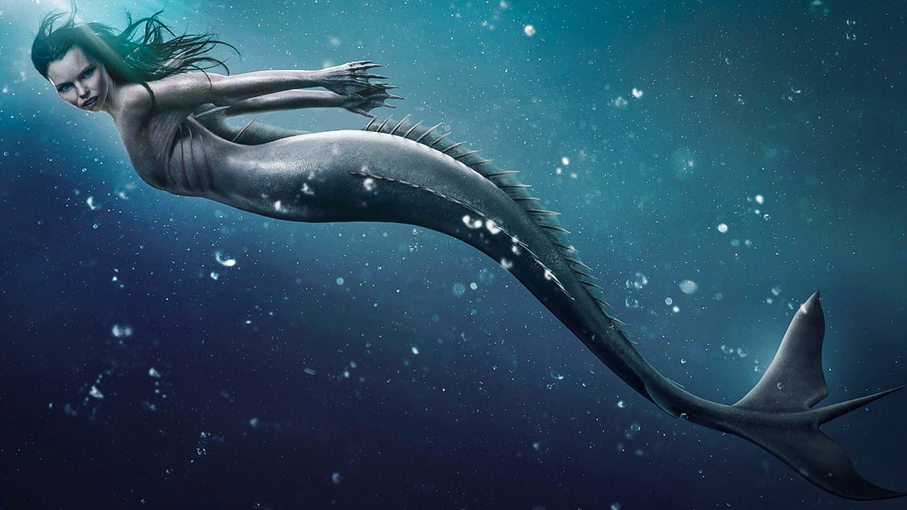

Русалки и Сирени
Русалките и сирените са въображаеми същества, които имат горната част на тялото и лицата като жени с долни тела на птици или риби.
Русалките често намират споменаване във фолклора на повечето цивилизации и култури като красиви водни същества, които са наполовина жени и наполовина риби.
Има обаче много различни имена, дадени на такива същества като сирени, никси, ундини, водни нимфи, русалки и т.н., които са достатъчни, за да объркат хората.
Хората остават особено объркани между русалка и сирена поради техните прилики.
Русалки
Смята се, че водата във всички култури е пълна с живот.
Във всички култури митът и фолклорът споменават водни същества, които са наполовина жени и наполовина риби.
Тези нежни създания винаги са били изобразявани като красиви, нежни и помагащи на моряци и други, пътуващи през моретата.
Въпреки факта, че тези същества не съществуват и се срещат само във фолклора, книгите и филмите, те остават чаровни и трайни както винаги и ние откриваме артефакти и изображения във всички култури по света.
Смята се, че първата от русалките е Атаргатис, която скочи в морето, за да се превърне в русалка, за да причини случайно смъртта на своя любим.
В повечето истории тези същества са показани като невинни и добронамерени същества, които помагат на хората по един или друг начин.
Всъщност в някои от историитее показано русалка, която се влюбва в човек.
Хората съобщават за наблюдения на същества като русалки от незапомнени времена.
Няма конкретни доказателства за съществуването им, но те остават част от нашето изкуство и култура под формата на карикатури, книги, филми, подаръчни артикули и други предмети, използвани за декорация.
Сирени
Сирените са митологични персонажи или същества, открити в гръцката митология.
Те бяха посочени като нимфи, които живееха на острови, заобиколени от скали и омагьосани приближаващи се моряци с гласа и музиката си.
Появата на сирените е объркваща, тъй като в някои истории те са изобразени като птици с човешки глави,
докато в други са изобразени като наполовина жена и наполовина риба, за да изглеждат като русалки.
Има объркване и поради факта, че на някои езици като френския думата за русалки всъщност е сирена.
В повечето от историите обаче са показани сирени, които пеят песни, за да привлекат моряци.
Моряците бяха привлечени и загубиха чувството си за посока, като по този начин предизвикаха корабокрушение и се удавиха в моретата.
